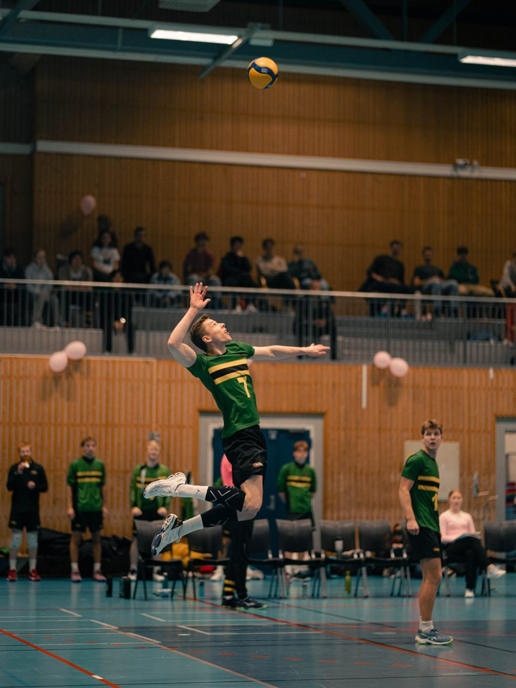
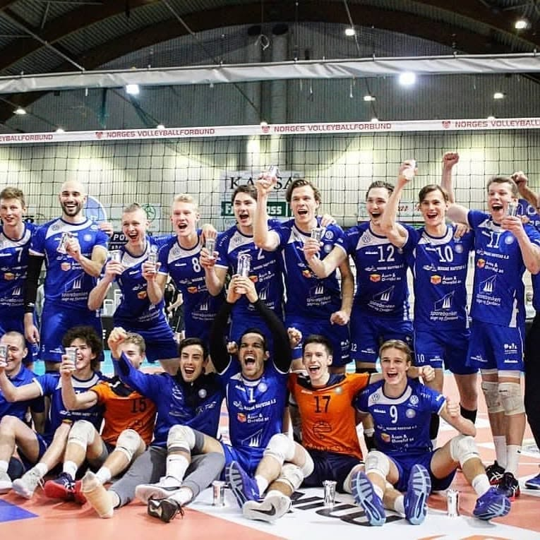

Volleyball er en av hobbyene mine. Her er lagene jeg har spilt for og posisjonene jeg spiller.

Lag
-
Til 2021
Førde
Spilte for Førde frem til 2021, og vant tre kongepokaler med laget.
🏆 3 × kongepokal
Fra tiden i Førde -
2023 –
NTNUI
Spiller for NTNUI, idrettslaget til studentene ved NTNU i Trondheim.
Kamper
Alle kampene jeg har spilt, i Eliteserien og 1. divisjon, inkludert sluttspill, cup og Europacup.
Statistikk
Poeng og statistikk fra kampene med OSI 2 og NTNUI 2 som er registrert hos NVBF.
Kilde: NVBF / Data Project. Tallene oppdateres automatisk.
Posisjoner
Kant og diagonal.